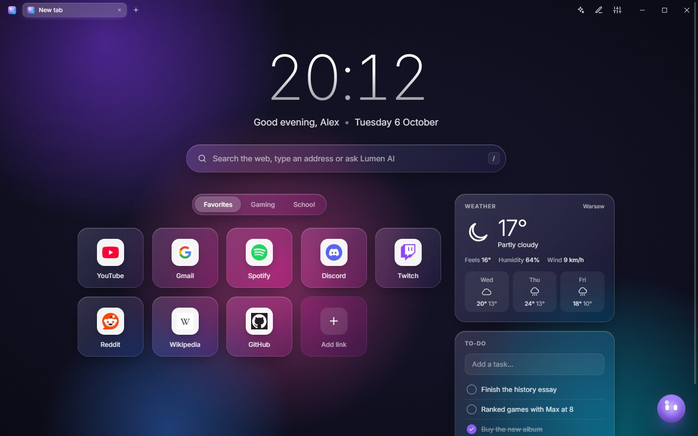
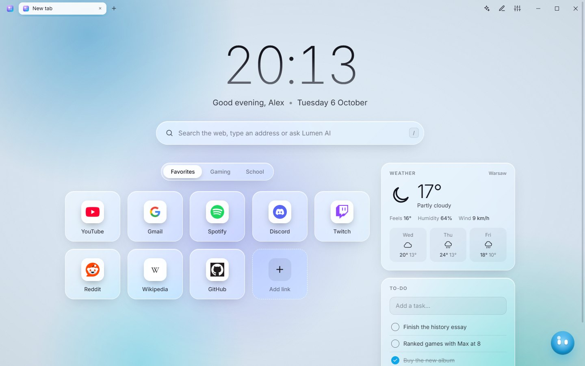
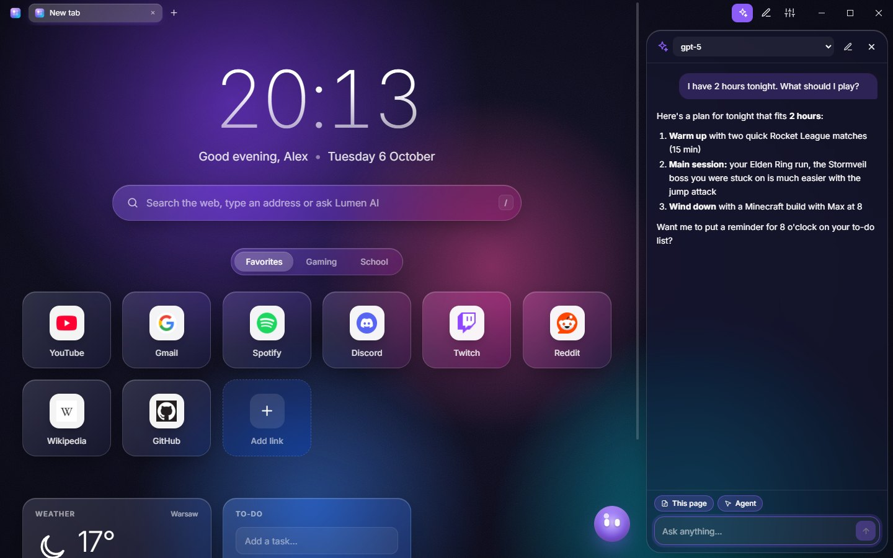

Your start page for gaming, browsing and everything in between
Lumen opens with your PC and puts your games, favourite sites, a built-in browser with an ad blocker, and an AI companion called Lumi in one good-looking place.

Everything you open every day, in one place
Lumen replaces the empty new-tab page with a home for your games, sites and plans. It looks the way you like, and it stays fast even on older PCs.
All your games
Steam, Epic, Minecraft and Roblox games show up by themselves. One click to play, with playtime stats if you want them.
A browser with an ad blocker
Tabs right inside Lumen, with ads and trackers blocked, so pages load faster and videos start without ads.
Lumi, your AI companion
Ask anything, get video summaries and game tips, or let it click through websites for you (it always asks first). Connect ChatGPT, Claude, Gemini, or a free AI that runs on your own PC.
Handy widgets
Weather, to-do list, notes, calculator, what's playing on Spotify or YouTube, who's live on Twitch, and your PC's stats.
Looks the way you want
Themes, light and dark mode, glass effects, fonts, your own wallpaper, and graphics settings from fast to full 3D.
Updates itself
New versions download quietly in the background, and Lumen asks you before it switches. You only download it once.
See it in action
Dark or light, with Lumi helping out in the sidebar.


How to install
It takes about a minute, and there's nothing to set up.
Download Lumen
Click Download Lumen at the top of this page. You get a zip file of about 150 MB.
Unzip it
Right-click the zip and choose Extract All…, then Extract. Put the folder wherever you like, for example in Documents. Don't open Lumen from inside the zip.
Open Lumen
In the folder, double-click Lumen.exe. Lumen asks if you'd like a shortcut on your desktop, and it starts with Windows from then on (you can turn that off in Settings).
If Windows says "Windows protected your PC"
That's because Lumen is made by one person and isn't registered with Microsoft. Click More info, then Run anyway. You only see this the first time.
If Windows blocks it completely
Your PC has Smart App Control turned on. Open the app folder inside the Lumen folder and start Lumen.exe from there instead.
Questions
Anything else? Just ask the person who sent you this page.
Is Lumen free?
Yes, completely. The AI features use your own AI account, or a free AI that runs on your PC; see below.
Which download should I pick?
The big Download Lumen button gets the full Lumen, with the built-in browser and its ad blocker. If you'd rather keep using Chrome, Edge or Firefox for websites, choose Lumen without the built-in browser: links then open in your normal browser.
Is it safe? Does it collect my data?
Lumen keeps your links, settings and history only on your PC. It doesn't have accounts, ads or tracking. AI keys you add are encrypted by Windows and only sent to the AI service you pick.
Do I need to pay for the AI?
No. You can connect an account you already have (ChatGPT, Claude, Gemini, Groq and more), or use LM Studio or Ollama to run a free AI on your own PC. Lumen works fine without any AI too.
How do updates work?
Lumen checks for new versions by itself. When one is ready, Lumi asks if you want to update now; one click and Lumen restarts on the new version. You can also check in Settings → General → Updates.
Will it slow down my games?
No. Lumen pauses its animations while it's in the background, and you can choose a lighter graphics mode in Settings → Look for older PCs.
How do I uninstall it?
In Lumen, turn off Settings → General → Start with Windows, close Lumen, and delete the Lumen folder. To also remove your settings, delete %APPDATA%\Lumen.